第 1 页Page 1PDF p.1
Track Any Motions under Any Disturbances
核对原版排版
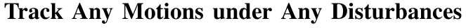
在任意扰动下跟踪任意动作
Zhikai Zhang˚1,3 Jun Guo˚1,3 Chao Chen2,3 Jilong Wang2,3 Chenghuai Lin3 Yunrui Lian1,3 Han Xue1,3 Zhenrong Wang3 Maoqi Liu3 Huaping Liu1 He Wang2,3 Li Yi:1,4
核对原版排版
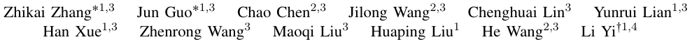
Zhikai Zhang˚1,3 Jun Guo˚1,3 Chao Chen2,3 Jilong Wang2,3 Chenghuai Lin3 Yunrui Lian1,3 Han Xue1,3 Zhenrong Wang3 Maoqi Liu3 Huaping Liu1 He Wang2,3 Li Yi:1,4
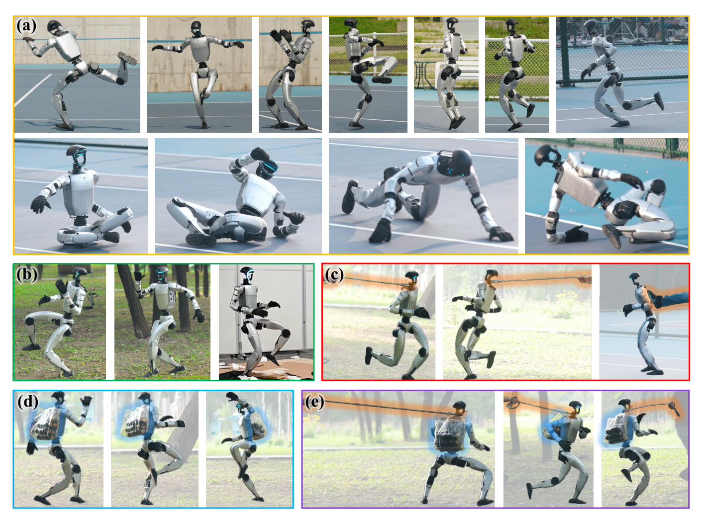
Fig. 1: (a) The humanoid tracks diverse , highly dynamic , and contact-rich motions using a single policy. (b) The humanoid tracks motions on different terrains . (c) The humanoid tracks motions against different external forces , including pulling forces from the rope and pushing forces from the human feet. (d) The humanoid tracks motions against physical property changes (the payload on the back). (e) The humanoid tracks motions against all dynamics disturbances , including terrains , external forces , and physical property changes simultaneously.
核对原版排版
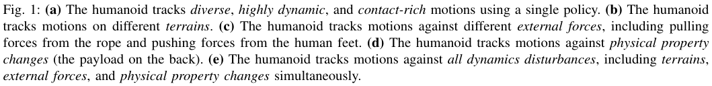
图 1：(a) 人形机器人使用单一策略跟踪多样、高度动态且富接触的动作。(b) 人形机器人在不同地形上跟踪动作。(c) 人形机器人抵御不同外力跟踪动作，包括绳索的拉力和人脚的推力。(d) 人形机器人克服物理属性变化（背部负载）跟踪动作。(e) 人形机器人同时抵御所有动力学扰动跟踪动作，包括地形、外力和物理属性变化。
Abstract — A foundational humanoid motion tracker is expected to be able to track diverse, highly dynamic, and contact-rich motions. More importantly, it needs to operate stably in real-world scenarios against various dynamics disturbances, including terrains, external forces, and physical property changes for general practical use. To achieve this goal, we propose Any2Track (Track Any motions under Any disturbances), a two-stage RL framework to track various motions under multiple disturbances in the real world. Any2Track reformulates dynamics adaptability as an additional capability
核对原版排版
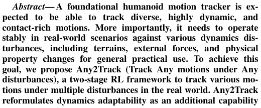
摘要——一个基础人形机器人动作跟踪器应当能够跟踪多样、高度动态且富接触的动作。更重要的是，为了通用的实际应用，它需要在真实世界场景中稳定运行，抵御包括地形、外力和物理属性变化在内的各种动力学扰动。为了实现这一目标，我们提出了 Any2Track（Track Any motions under Any disturbances，在任意扰动下跟踪任意动作），这是一个用于在真实世界多重扰动下跟踪各种动作的两阶段强化学习（RL）框架。Any2Track 将动力学适应性重构为一种额外能力
*Equal Contributions, :Corresponding Author
核对原版排版
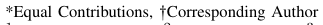
*同等贡献，:通讯作者
1Tsinghua University, 2Peking University, 3Galbot, 4Shanghai Qi Zhi Institute
核对原版排版
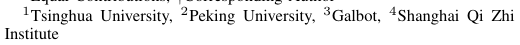
1清华大学，2北京大学，3Galbot，4上海期智研究院
Paper website: https://zzk273.github.io/Any2Track/
核对原版排版
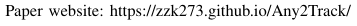
论文主页：https://zzk273.github.io/Any2Track/
on top of basic action execution and consists of two key components: AnyTracker and AnyAdapter. AnyTracker is a general motion tracker with a series of careful designs to track various motions within a single policy. AnyAdapter is a history-informed adaptation module that endows the tracker with online dynamics adaptability to overcome the sim2real gap and multiple real-world disturbances. We deploy Any2Track on Unitree G1 hardware and achieve a successful sim2real transfer in a zero-shot manner. Any2Track performs exceptionally well in tracking various motions under multiple real-world disturbances, as shown in Figure 1. For real-world demos, please refer to https://zzk273.github.io/Any2Track/.
核对原版排版
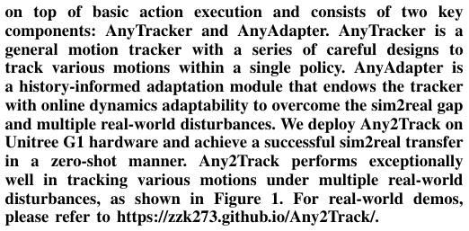
建立在基础动作执行之上，并包含两个核心组件：AnyTracker 和 AnyAdapter。AnyTracker 是一个通用动作跟踪器，通过一系列精心设计，可在单一策略内跟踪各种动作。AnyAdapter 是一个基于历史信息的自适应模块，赋予跟踪器在线动力学适应能力，以克服仿真到现实迁移（sim2real）差距和真实世界中的多重扰动。我们将 Any2Track 部署在 Unitree G1 硬件上，并以零样本（zero-shot）方式成功实现了仿真到现实迁移。如图 1 所示，Any2Track 在面对现实世界多种扰动时，跟踪各种动作均表现出优异的性能。真实世界演示请参见 https://zzk273.github.io/Any2Track/。
展开第 1 页原版整页（含全部图表、公式与页眉页脚）
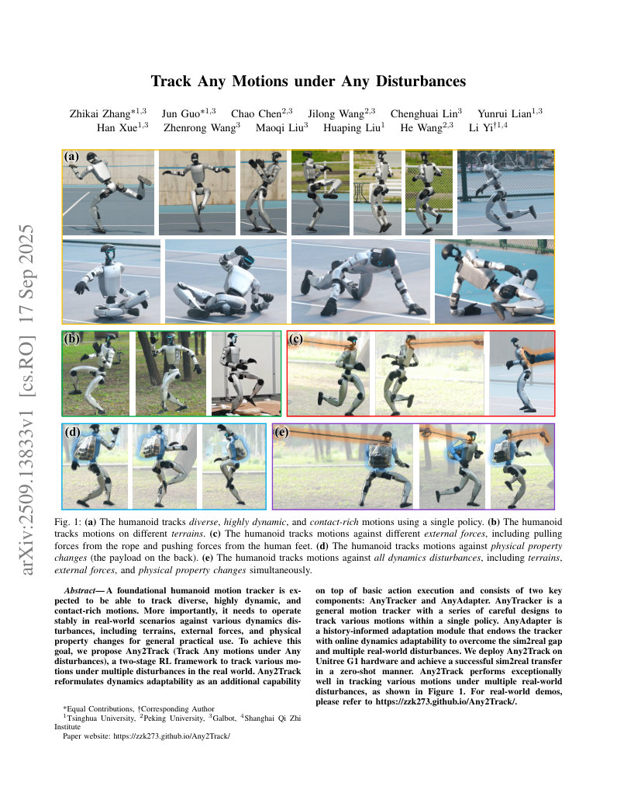
第 2 页Page 2PDF p.2
I. INTRODUCTION
核对原版排版
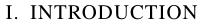
I. 引言
Humanoid motion tracking [1]–[6] aims to reproduce human motion sequences on a humanoid platform, enabling more expressive and anthropomorphic motion behavior compared with pure RL-based controllers [7]–[14]. A foundational humanoid motion tracker should be able to track diverse, highly dynamic, and contact-rich motions to capture general human motion knowledge. In addition, it needs to operate stably in real-world scenarios against various disturbances, including terrains, external forces, and physical property changes (e.g., payload, friction) for general practical use. However, existing humanoid motion trackers fail to have general motion tracking capability and dynamics adaptability simultaneously. They exhibit varying levels of limitations in motion tracking capabilities and resilience to different realworld disturbances. The comparison of existing works and our method is shown in Table I.
核对原版排版
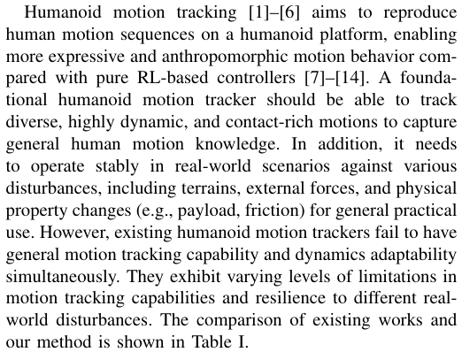
人形机器人动作跟踪 [1]–[6] 旨在将人类动作序列复现到人形机器人平台上，与纯基于强化学习的控制器 [7]–[14] 相比，能够实现更具表现力且更加拟人化的动作行为。一个基础的人形机器人动作跟踪器应当能够跟踪多样、高度动态且富接触的动作，以捕获通用的人类运动知识。此外，为了通用的实际应用，它需要在现实世界场景中稳定运行，抵御包括地形、外力和物理属性变化（例如负载、摩擦力）在内的各种扰动。然而，现有的人形机器人动作跟踪器无法同时具备通用动作跟踪能力与动力学适应性。它们在动作跟踪能力以及对不同现实世界扰动的抗扰恢复能力上表现出不同程度的局限性。现有工作与我们方法的对比见表 I。
The key challenges to construct a fundamental humanoid motion tracker can be summarized in two points: 1) how to construct a unified general motion tracker to efficiently and with high quality learn diverse motion control strategies; 2) how to endow the controller with online dynamics adaptability to overcome the sim2real dynamics gap and various real-world disturbances.
核对原版排版
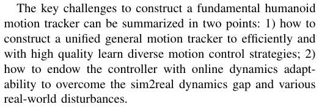
构建基础人形机器人动作跟踪器的关键挑战可归纳为两点：1) 如何构建统一的通用动作跟踪器，以高效且高质量地学习多样化的动作控制策略；2) 如何赋予控制器在线动力学适应能力，以克服仿真到现实的动力学差距以及各种现实世界的扰动。
Towards the goal of constructing a foundational humanoid motion tracker, we propose a two-stage RL framework called Any2Track ( Track Any motions under Any disturbances) in this work. Any2Track reformulates dynamics adaptability as an additional capability on top of basic action execution and consists of two key components: AnyTracker and AnyAdapter.
核对原版排版
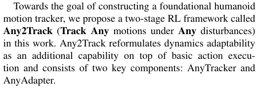
为了实现构建基础人形机器人动作跟踪器的目标，我们在本工作中提出了一个名为 Any2Track（Track Any motions under Any disturbances，在任意扰动下跟踪任意动作）的两阶段强化学习框架。Any2Track 将动力学适应性重构为基础动作执行之上的额外能力，包含两个关键组件：AnyTracker 和 AnyAdapter。
In the first stage, we construct AnyTracker , a general motion tracker to track diverse, highly dynamic, and contactrich motions. We found that the bottleneck in training a general motion tracker lies in the complex action spaces brought by high degrees of freedom and motion diversity. Thus, we propose a series of careful designs, including canonicalized action spaces and a specialist-to-generalist strategy, to alleviate the optimization difficulties brought by the complex action spaces. AnyTracker is trained as a base policy without any dynamics randomization to avoid tracking performance degradation.
核对原版排版
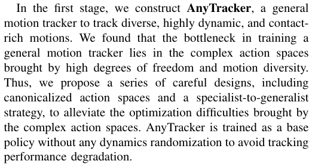
在第一阶段，我们构建了 AnyTracker，这是一个用于跟踪多样、高度动态且富接触动作的通用动作跟踪器。我们发现，训练通用动作跟踪器的瓶颈在于高自由度和动作多样性所带来的复杂动作空间。因此，我们提出了一系列精心设计，包括规范化动作空间以及从专精到通用的策略（specialist-to-generalist strategy），以缓解复杂动作空间带来的优化困难。AnyTracker 作为基础策略进行训练，不引入任何动力学随机化，以避免跟踪性能退化。
In the second stage, we introduce dynamics variance and further propose a history-informed adaptation module on top of AnyTracker, which is called AnyAdapter . AnyAdapter endows the base tracker with online dynamics adaptability for different kinds of disturbances, including terrains, external forces, and physical property changes, without compromising its foundational expressive motion tracking capability. AnyAdapter utilizes dynamics-aware world model prediction as a proxy task to extract dynamics features as neural embeddings from the history buffer, which can serve as an informative representation to identify environment dynamics. Rather than directly finetuning the original parameters of the base tracker for dynamics adaptability, which may harm the tracking skills already acquired, we freeze the base tracker
核对原版排版
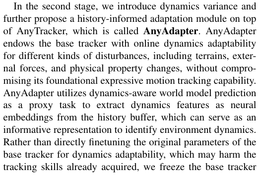
在第二阶段，我们引入动力学变化，并在 AnyTracker 之上进一步提出了一个基于历史信息的自适应模块，称为 AnyAdapter。AnyAdapter 为基础跟踪器赋予了针对地形、外力和物理属性变化等不同类型扰动的在线动力学适应能力，同时不损害其基础的表现力丰富的动作跟踪能力。AnyAdapter 利用动力学感知世界模型预测作为代理任务，从历史缓冲区中提取作为神经嵌入的动力学特征，该特征可作为辨识环境动力学的信息丰富表征。为了实现动力学适应性，我们并没有直接微调基础跟踪器的原始参数（这可能会破坏已经学得的跟踪技能），而是冻结了基础跟踪器
and introduce an adapter [15] architecture. The adapter is trained to adaptively adjust the base policy’s actions to accommodate different environments, taking dynamics embeddings as input.
核对原版排版
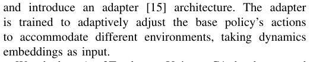
并引入了适配器 [15] 架构。该适配器以动力学嵌入作为输入，经过训练后能够自适应调整基础策略的动作，以适应不同的环境。
We deploy Any2Track on Unitree G1 hardware and achieve a successful sim2real transfer in a zero-shot manner. Our method shows impressive results in tracking diverse, highly dynamic, and contact-rich motions when faced with real-world disturbances from different sources, including terrains, external forces, and physical property changes. Extensive experiments are conducted both in the simulation and in the real world to validate the effectiveness of our major designs.
核对原版排版
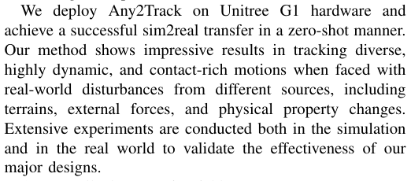
我们将 Any2Track 部署在 Unitree G1 硬件上，并以零样本方式成功实现了仿真到现实迁移。面对来自地形、外力和物理属性变化等不同源头的现实世界扰动，我们的方法在跟踪多样、高度动态且富接触的动作时展现出令人瞩目的成果。我们在仿真和真实世界中均进行了广泛的实验，以验证我们主要设计的有效性。
Our contributions are fourfold:
核对原版排版
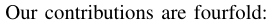
我们的贡献主要有四个方面：
- ‚ Any2Track : A novel two-stage RL framework for robust humanoid motion tracking that excels under significant real-world disturbances.
核对原版排版
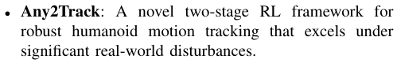
- Any2Track：一种新颖的两阶段强化学习框架，用于鲁棒的人形机器人动作跟踪，在显著的现实世界扰动下表现优异。
- ‚ AnyTracker : A general motion tracker with a series of careful designs to alleviate the optimization difficulties brought by complex action spaces and track diverse, highly dynamic, and contact-rich motions.
核对原版排版
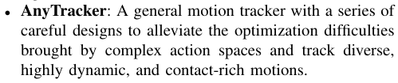
- AnyTracker：一个通用动作跟踪器，通过一系列精心设计来缓解复杂动作空间带来的优化困难，并跟踪多样、高度动态且富接触的动作。
- ‚ AnyAdapter : A history-informed module that provides online adaptation to dynamic shifts and external perturbations, including terrains, external forces, and physical property changes.
核对原版排版
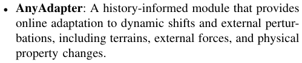
- AnyAdapter：一个基于历史信息的模块，为动力学变化和外部扰动（包括地形、外力以及物理属性变化）提供在线自适应。
- ‚ State-of-the-art Performance : We demonstrate superior real-world tracking under disturbances on the Unitree G1 hardware, validated by extensive experiments in both simulation and reality.
核对原版排版
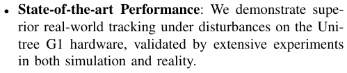
- 最先进的性能（State-of-the-art Performance）：我们在 Unitree G1 硬件平台上展示了受扰动情况下卓越的真实世界动作跟踪表现，并通过仿真与真实环境中的大量实验进行了验证。
II. RELATED WORKS
核对原版排版
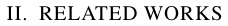
II. 相关工作
A. Motion Tracking
核对原版排版
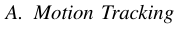
A. 动作跟踪
Motion tracking aims to reproduce human motions to learn anthropomorphic whole-body controllers, which has been extensively studied in character animation [19]–[26]. [19] shows progressive results in constructing a general motion tracking strategy with dynamic, versatile, and perpetual tracking capability.
核对原版排版
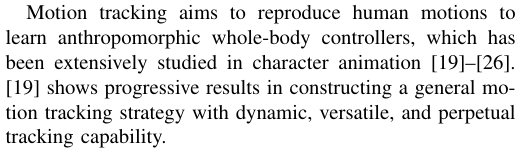
动作跟踪旨在复现人类动作以学习拟人化全身控制器，该方向在角色动画领域已得到广泛研究 [19]–[26]。[19] 展示了在构建具备高动态、多样化且持久跟踪能力的通用动作跟踪策略方面的显著进展。
Recently, robotics researchers have started to explore the reproduction of human motions on real-world humanoid hardware platforms [1]–[6], to enable more expressive motion behavior compared with pure RL-based controllers [7]– [10]. However, compared with character animation, motion tracking on humanoid robots still lags behind significantly due to the cross-embodiment gap, actuator limits, and simto-real challenges. HumanPlus [1] and OmniH2O [2] mainly focus on quasi-static loco-manipulation tasks. ASAP [6] achieves highly dynamic motion tracking. However, it overfits to motion clips of only a few seconds. GMT [5] constructs a general motion tracker with multiple careful designs in motion distribution sampling and network architecture. Although this method can track a considerable portion of data from LAFAN1 [16] and AMASS [17] datasets, it shows limited capability when dealing with highly dynamic and contact-rich motions. Moreover, GMT does not show adaptability to external disturbances, which limits its practicality in real-world scenarios.
核对原版排版
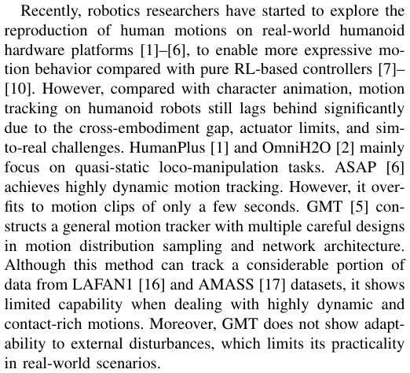
最近，机器人学研究人员已开始探索在真实世界人形机器人硬件平台上复现人类动作 [1]–[6]，以相比纯强化学习控制器 [7]–[10] 实现更具表现力的动作行为。然而，与角色动画相比，由于跨具身差距、执行器限制以及仿真到现实迁移的挑战，人形机器人上的动作跟踪仍显著落后。HumanPlus [1] 与 OmniH2O [2] 主要关注准静态移动操作任务。ASAP [6] 实现了高动态动作跟踪，但它过拟合于仅数秒长度的动作片段。GMT [5] 通过在动作分布采样和网络架构方面的多项精心设计，构建了一个通用动作跟踪器。尽管该方法能够跟踪 LAFAN1 [16] 和 AMASS [17] 数据集中的相当一部分数据，但在处理高动态和富接触动作时表现出有限的能力。此外，GMT 并未展现出对外部扰动的适应性，这限制了其在真实世界场景中的实用性。
展开第 2 页原版整页（含全部图表、公式与页眉页脚）
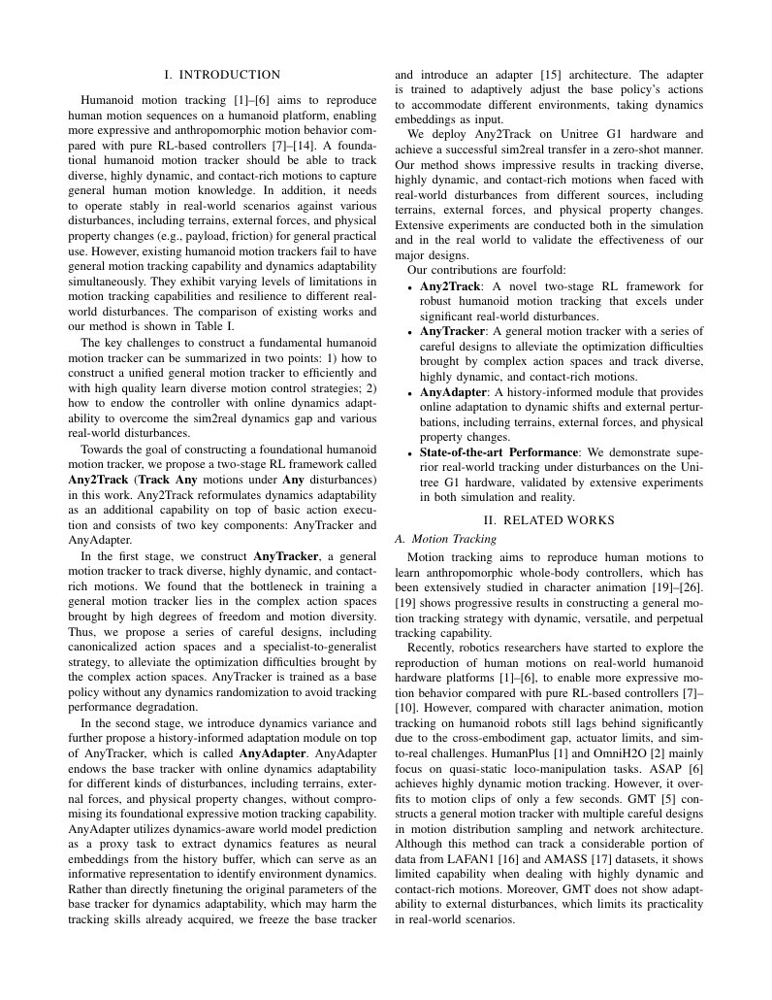
第 3 页Page 3PDF p.3
TABLE I: Overall comparison of different motion tracking methods. We compare Any2Track with existing methods according to their performance in publicly available demos and their proposed methods. Any2Track demonstrates unprecedented levels of motion diversity, high dynamism, and contact complexity. More distinctively, our method adapts to multiple real-world disturbances for general practical use. It is worth noting that, although both Any2Track and GMT [5] use the combination of LAFAN1 [16] and AMASS [17] as the training dataset, GMT removed a significant portion of highly dynamic or contact-rich motions. In contrast, we retained these motions.
核对原版排版
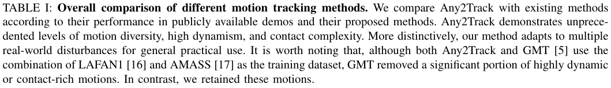
表 I：不同动作跟踪方法的综合对比。我们根据现有方法在公开演示视频中的表现及其论文提出的方法，将 Any2Track 与现有方法进行了对比。Any2Track 展现出了前所未有的动作多样性、高动态性以及接触复杂性。更具特色的是，我们的方法能够适应多种真实世界扰动，以实现通用的实际应用。值得注意的是，尽管 Any2Track 与 GMT [5] 均采用 LAFAN1 [16] 与 AMASS [17] 的组合作为训练数据集，但 GMT 剔除了相当大一部分高动态或富接触动作；相比之下，我们保留了这些动作。
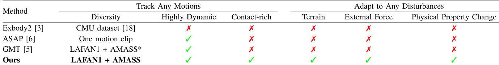
Compared with existing works, Any2Track demonstrates unprecedented levels of motion diversity, high dynamism, and contact complexity within a unified tracking policy. More distinctively, our method endows the motion tracker with online dynamics adaptability to overcome the sim-to-real gap and various real-world disturbances, marking a significant step toward general real-world use.
核对原版排版
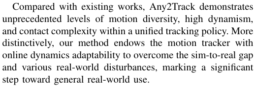
与现有工作相比，Any2Track 在单一统一的跟踪策略中展现出了前所未有的动作多样性、高动态性以及接触复杂性。更具特色的是，我们的方法赋予了动作跟踪器在线动力学自适应能力，以克服仿真到现实差距及各种真实世界的扰动，向通用的真实世界应用迈出了重要一步。
B. Online Dynamics Adaptation for Legged Robots
核对原版排版
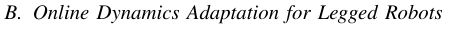
B. 足式机器人在线动力学自适应
A key challenge in constructing a fundamental humanoid motion tracker is to overcome the sim2real dynamics gap and various real-world disturbances for general practical use. Existing works [1], [3], [5] often rely on na¨ıve domain randomization in the hope that the policy can perform robustly under different environment dynamics. However, due to the unawareness of the environment dynamics, the policy cannot adaptively adjust its actions, causing it to behave conservatively when faced with large dynamic variance.
核对原版排版
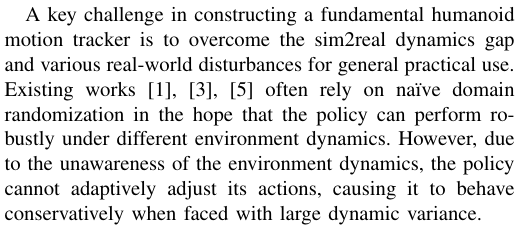
构建基础人形动作跟踪器的一个关键挑战，在于克服仿真到现实迁移（sim2real）的动力学差距以及各种真实世界扰动，以实现通用的实际应用。现有工作 [1], [3], [5] 通常依赖朴素的域随机化，寄希望于策略能在不同的环境动力学下鲁棒运行。然而，由于无法感知环境动力学，策略无法自适应地调整其动作，导致在面对较大的动力学变化时表现得较为保守。
To cope with more complex real-world environments for legged robots, existing works [9], [27], [28] utilize robotenvironment interaction history to adaptively estimate realworld dynamics and adjust robot behavior accordingly. Rapid Motor Adaptation (RMA) [28] learns to encode recent state histories into a latent representation of environment dynamics by distilling knowledge from a privileged teacher encoder. Li et al. [27] designs a dual-history architecture to overcome the sim2real dynamics gap with history information over varying horizons. DWL [9] utilizes a denoising world model to predict environment configuration and privileged robot states simultaneously from history information.
核对原版排版
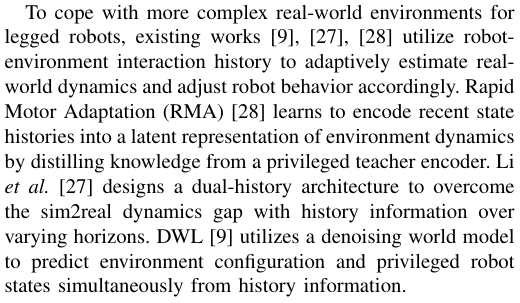
为了让足式机器人应对更复杂的真实世界环境，现有工作 [9], [27], [28] 利用机器人与环境的交互历史来在线自适应估计真实世界动力学，并据此调整机器人行为。Rapid Motor Adaptation (RMA) [28] 通过从特权教师编码器中蒸馏知识，学习将近期的状态历史编码为环境动力学的潜在表征。Li 等人 [27] 设计了一种双历史架构，利用不同时间跨度的历史信息来克服仿真到现实的动力学差距。DWL [9] 则利用去噪世界模型，从历史信息中同时预测环境配置与特权机器人状态。
Compared with existing works, we take a further step in online dynamics adaptation. To learn better dynamics representations from the history buffer, we introduce dynamics-aware world model prediction as a proxy task. The learned representations are more informative in dynamics. To decouple the acquisition of motion tracking capability and dynamics adaptability to reduce the difficulty of joint optimization, we introduce an adapter architecture and a finetuning stage on top of a base tracker to accommodate different environment dynamics.
核对原版排版
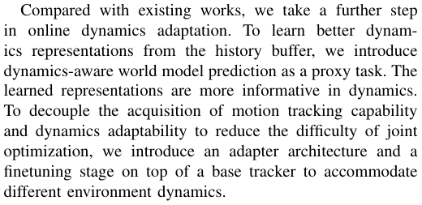
与现有工作相比，我们在在线动力学自适应方面更进一步。为了从历史缓冲区中学习到更优的动力学表征，我们引入了动力学感知的世界模型预测作为代理任务，所学习到的表征蕴含更丰富的动力学信息。为了将动作跟踪能力的获取与动力学自适应能力进行解耦以降低联合优化的难度，我们在基础跟踪器之上引入了适配器架构以及微调阶段，以适应不同的环境动力学。
III. TRACK ANY MOTIONS UNDER ANY DISTURBANCE
核对原版排版
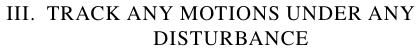
III. 在任意扰动下跟踪任意动作
We propose Any2Track in this work, a two-stage RL framework to build a foundational humanoid motion tracker. The design philosophy of Any2Track is to reformulate dynamics adaptability as an additional capability on top of basic action execution and decouple its learning process. Such a design can demonstrate exceptional robustness to environmental disturbances while preserving its motion expressiveness. Concretely, we first construct AnyTracker, a general motion tracker with a series of careful designs to alleviate the optimization difficulties brought by complex action spaces and track various motions, as shown in Section III-A. At this stage, AnyTracker is trained as a base policy without any dynamics randomization to avoid tracking performance degradation. We then propose AnyAdapter, a historyinformed adaptation module to overcome the sim2real dynamics gap and various real-world disturbances, as shown in Section III-B. At this stage, we introduce dynamics domain randomization and fine-tune the motion tracker for dynamics adaptability. The pipeline is shown in Figure 2. We use PPO [29] as our reinforcement learning framework and MuJoCo [30], [31] for simulation. We train our policy in parallel on 8 GPUs.
核对原版排版
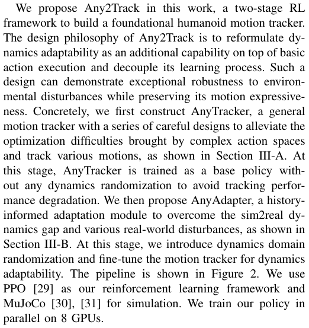
在本工作中，我们提出了 Any2Track，这是一个用于构建基础人形动作跟踪器的两阶段强化学习框架。Any2Track 的设计理念是将动力学自适应能力重构为基础动作执行之上的附加能力，并将其学习过程解耦。这种设计能够在保持动作表现力的同时，展现出对环境扰动非凡的鲁棒性。具体而言，如第 III-A 节所示，我们首先构建了 AnyTracker，这是一个通过一系列精心设计来缓解复杂动作空间带来的优化难题并跟踪各类动作的通用动作跟踪器。在此阶段，AnyTracker 作为基础策略进行训练，不施加任何动力学随机化，以避免跟踪性能退化。随后，如第 III-B 节所示，我们提出了 AnyAdapter，这是一个基于历史信息的自适应模块，用于克服仿真到现实的动力学差距及各种真实世界扰动。在此阶段，我们引入动力学域随机化，并对动作跟踪器进行微调以获得动力学自适应能力。整体流程如图 2 所示。我们使用 PPO [29] 作为强化学习框架，并使用 MuJoCo [30], [31] 进行仿真。我们在 8 块 GPU 上并行训练我们的策略。
A. AnyTracker: Track Any Motions
核对原版排版
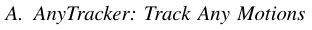
A. AnyTracker：跟踪任意动作
Our tracker can be seen as an RL policy π : G ˆ S ÞÑ A , which maps humanoid proprioception state and tracking goals to low-level robot actions. At each timestep t , the inputs of policy π consist of current state st and current tracking goals gt . st includes angular velocity, projected gravity, per-joint position, per-joint velocity, and last-frame action. gt depicts next-frame humanoid target motion, including target per-joint position, target per-joint velocity, and target rigid body information in the local frame. The policy π needs to output per-joint action at , which is further fed into a PD controller to compute actuator torques. The task goal of motion tracking is that at timestep t ` 1, the robot’s state st `1 should be as close as possible to the target motion depicted by gt while maintaining balance and safety. The reward terms we used are shown in Table II.
核对原版排版
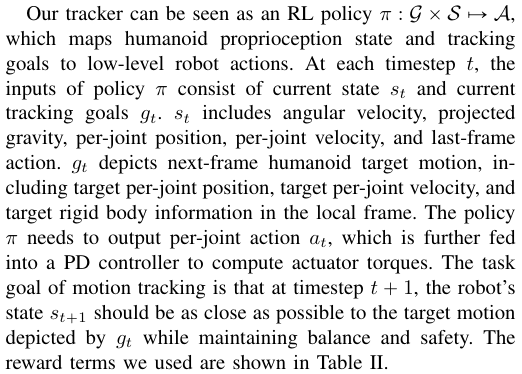
我们的跟踪器可以看作是一个强化学习策略 π : 〔行内公式见原版〕，它将人形机器人的本体感觉状态和跟踪目标映射到低层机器人动作。在每个时间步 t，策略 π 的输入由当前状态 st 和当前跟踪目标 gt 组成。st 包括角速度、重力投影、各关节位置、各关节速度以及上一帧动作。gt 描述了下一帧的人形机器人目标动作，包括目标各关节位置、目标各关节速度以及局部坐标系下的目标刚体信息。策略 π 需要输出各关节动作 at，该动作被进一步输入到 PD 控制器中以计算执行器力矩。动作跟踪的任务目标是：在时间步 t+1，机器人的状态 st+1 应尽可能接近由 gt 所描绘的目标动作，同时保持平衡与安全。我们使用的奖励项如表 II 所示。
To achieve general motion tracking, we use the combination of AMASS [17] and LAFAN1 [16] motion datasets as our training data. We filter out motions infeasible for tracking
核对原版排版
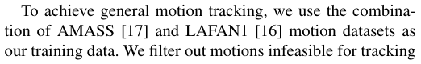
为了实现通用动作跟踪，我们采用 AMASS [17] 与 LAFAN1 [16] 动作数据集的组合作为训练数据。我们过滤掉了无法进行跟踪的动作
展开第 3 页原版整页（含全部图表、公式与页眉页脚）
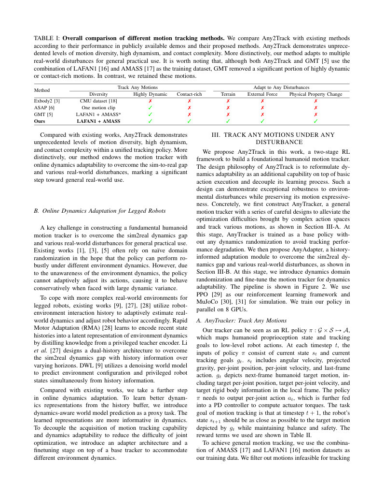
第 4 页Page 4PDF p.4
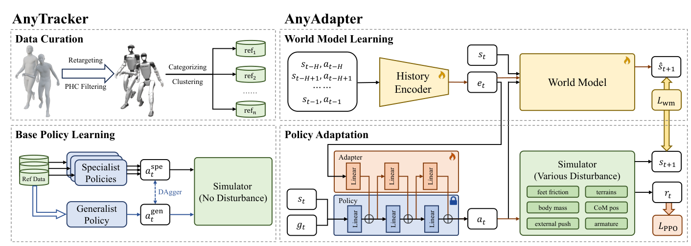
Fig. 2: Overview of our method. Any2Track consists of two key components: AnyTracker and AnyAdapter. AnyTracker is a general motion tracker with a series of careful designs. AnyAdapter is a history-informed adaptation module on top of AnyTracker. AnyAdapter endows the base tracker with online dynamics adaptability without compromising its fundamental expressive motion tracking capability.
核对原版排版
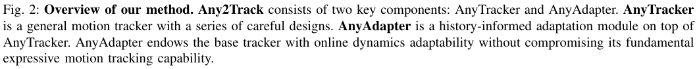
图 2：我们的方法概述。Any2Track 由两个关键组件组成：AnyTracker 和 AnyAdapter。AnyTracker 是一个经过一系列精心设计的通用动作跟踪器。AnyAdapter 是构建在 AnyTracker 之上的基于历史信息的自适应模块。AnyAdapter 在不牺牲其基础的富有表现力动作跟踪能力的前提下，赋予了基础跟踪器在线动力学自适应能力。
TABLE II: Reward terms used in AnyTracker.
核对原版排版
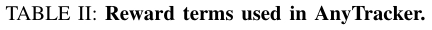
表 II：AnyTracker 中使用的奖励项。
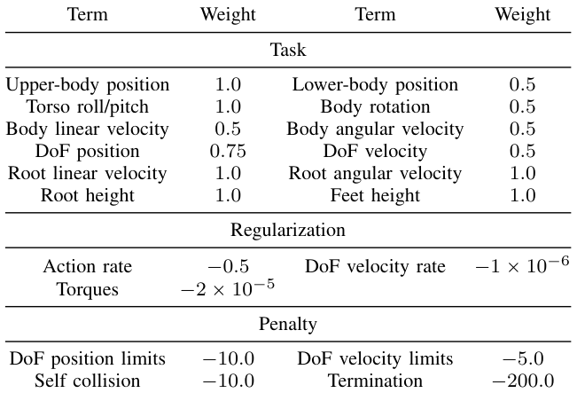
following PHC [19], primarily those involving interactions with an unavailable scene (e.g., climbing stairs). However, unlike GMT [5], we retain highly dynamic and contactrich motions. We found that with proper reward and policy observation design, training a motion tracker on a few highly dynamic or contact-rich motion trajectories is no longer difficult. The bottleneck in training a general motion tracker lies in the complex action spaces brought by the humanoid’s high degrees of freedom and the motion diversity. For different joints and different motion categories, the action distributions vary significantly, making it challenging to learn all distributions well in a single RL optimization process. Therefore, we propose novel designs to alleviate this difficulty in terms of degrees of freedom and motion diversity, respectively.
核对原版排版
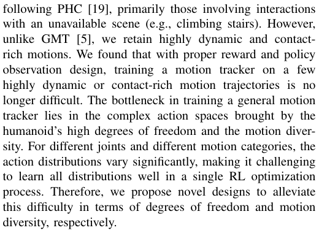
遵循 PHC [19]，主要是那些涉及与不可用场景交互的动作（例如爬楼梯）。然而，与 GMT [5] 不同，我们保留了高动态和富接触的动作。我们发现，通过合理的奖励和策略观测设计，在少量高动态或富接触动作轨迹上训练动作跟踪器已不再困难。训练通用动作跟踪器的瓶颈，在于人形机器人的高自由度以及动作多样性所带来的复杂动作空间。对于不同的关节和不同的动作类别，动作分布差异显著，使得在单一强化学习优化过程中难以很好地学习所有分布。因此，我们提出了新颖的设计，分别从自由度和动作多样性两个方面来缓解这一困难。
1) Canonicalized Action Spaces
核对原版排版
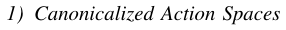
1) 规范化动作空间
The huge diversity of each joint’s action distribution makes it difficult for the policy to learn a general and high-quality control strategy. Thus, we propose to design a canonicalized motion tracking action space so that the policy only needs to predict a compact multi-joint action distribution.
核对原版排版
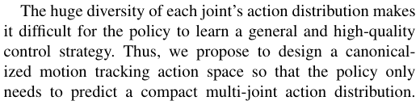
每个关节动作分布的巨大差异，使得策略难以学到通用且高质量的控制策略。因此，我们提议设计一个规范化的动作跟踪动作空间，使策略只需预测紧凑的多关节动作分布。
Concretely, we first utilize the tanh function to map the policy prediction π p at | st q to the range r´1 , 1s. However, the action range varies for different joints, and using a unified policy prediction range is not suitable for all joints and can severely hinder the tracker’s performance. Therefore, we use empirically designed hyperparameters α P Rnum ~~j~~ oints to rescale each joint’s action scale. Instead of directly predicting the PD targets, we predict residual PD offsets relative to the reference motion. The final PD targets can be written as:
核对原版排版
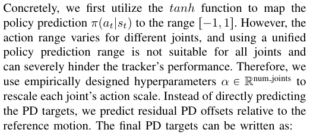
具体而言，我们首先利用 tanh 函数将策略预测 π p at | st q 映射到区间 r´1 , 1s。然而，不同关节的动作范围各不相同，使用统一的策略预测范围并不适合所有关节，并会严重阻碍跟踪器的性能。因此，我们使用经验设计的超参数 α P Rnum ~~j~~ oints 来重新缩放每个关节的动作尺度。我们不直接预测 PD 目标，而是预测相对于参考动作的残差 PD 偏移量。最终的 PD 目标可表示为：
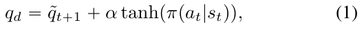
where q ˜ t `1 is the target next-frame joint position.
核对原版排版
其中 q ˜ t `1 为目标下一帧关节位置。
2) Motion Clustering and Specialist-to-Generalist
核对原版排版
2) 动作聚类与专才到通才
Different categories of motions exhibit different motion patterns and action distributions, posing challenges for general motion tracker training. Therefore, we propose to cluster motions according to categories and train a specialist for each motion cluster. By doing so, each specialist only needs to handle a set of motions with similar action distributions, which greatly reduces the training difficulty and improves the final results. For LAFAN1 [16], as the motion categories are already provided, we train a specialist policy for each motion category. For AMASS [17], HumanML3D [32] provides motion categories labels (the “VERB” term in the annotation). AMASS contains a large number of motion categories, and thus training a specialist for each category would be inefficient. Therefore, we feed the motion category labels into CLIP [33] to compute text feature embeddings. Then we cluster motions based on these embeddings using the K-means [34] method. We split AMASS into 6 subsets and train corresponding specialists. At last, we adopt the specialist-to-generalist paradigm [8] and use DAgger [35] to distill all specialists into a generalist policy.
核对原版排版
不同类别的动作表现出不同的运动模式和动作分布，这对通用动作跟踪器的训练提出了挑战。因此，我们提议按类别对动作进行聚类，并为每个动作聚类训练一个专才策略。如此一来，每个专才策略只需处理一组动作分布相似的动作，从而大幅降低了训练难度并提升了最终效果。对于 LAFAN1 [16]，由于其已经提供了动作类别，我们为每个动作类别训练一个专才策略。对于 AMASS [17]，HumanML3D [32] 提供了动作类别标签（标注中的“VERB”项）。AMASS 包含大量的动作类别，因此为每个类别都训练一个专才策略效率低下。为此，我们将动作类别标签输入 CLIP [33] 中以计算文本特征嵌入。随后，我们使用 K-means [34] 方法基于这些嵌入对动作进行聚类。我们将 AMASS 划分为 6 个子集并训练对应的专才策略。最后，我们采用专才到通才范式 [8]，并使用 DAgger [35] 将所有专才策略蒸馏为一个通才策略。
B. AnyAdapter: Adapt to Any Disturbances
核对原版排版
B. AnyAdapter：适应任意扰动
Based on the AnyTracker acquired previously, we introduce environment dynamics variance in Table III at this
核对原版排版
基于此前获得的 AnyTracker，我们在此阶段引入表 III 中的环境动力学变化，
第 5 页Page 5PDF p.5
TABLE III: Dynamics variance used in Any2Track. We add three types of randomization, including terrains, external forces, and physical property changes.
核对原版排版
表 III：Any2Track 中使用的动力学变化。我们添加了三种类型的随机化，包括地形、外力以及物理属性改变。
stage and propose AnyAdapter, a history-informed adaptation module for different kinds of disturbances.
核对原版排版
并提出了 AnyAdapter，一个面向各类扰动的基于历史信息的自适应模块。
We argue that there are two key components for online dynamics adaptability: 1) a good dynamics encoder that estimates adequate environment dynamics features from robotenvironment interaction history buffer; 2) an effective training strategy that helps the control policy to properly leverage these dynamics features to adaptively adjust its behavior without sacrificing motion expressiveness. Thus, AnyAdapter utilizes dynamics-aware world model predication as a proxy task to extract dynamics features into neural embeddings from the history buffer, which can serve as an informative representation to tell different dynamics. To facilitate the motion tracker’s learning of dynamics adaptability, AnyAdapter refrains from coupling the basic motion-tracking capability with dynamics adaptability in a single network and instead introduces an additional adapter architecture.
核对原版排版
我们认为，在线动力学自适应能力包含两个关键要素：1）一个优秀的动力学编码器，能从机器人与环境交互历史缓冲区中估计出充分的环境动力学特征；2）一种有效的训练策略，帮助控制策略合理利用这些动力学特征来自适应调整自身行为，且不牺牲动作表现力。因此，AnyAdapter 利用动力学感知世界模型预测作为代理任务，从历史缓冲区中提取动力学特征并转化为神经嵌入，这可作为区分不同动力学特性的信息丰富表征。为便于动作跟踪器学习动力学自适应能力，AnyAdapter 避免在单个网络中将基础动作跟踪能力与动力学自适应能力耦合在一起，而是引入了额外的适配器架构。
1) Learn Informative Dynamics Embeddings
核对原版排版
1) 学习信息丰富的动力学嵌入
Given the history of robot–environment interactions, the motion tracker is expected to leverage this information to estimate the current environment dynamics and adapt its behavior accordingly. However, we found that the interaction history often contains substantial irrelevant information and noise, making direct utilization challenging for model learning. To address this, it is necessary to introduce proxy tasks for representation learning, enabling the extraction of informative feature embeddings that capture rich dynamics knowledge. In this work, we propose dynamics-aware world model prediction, which contains a history encoder ϕ and a world model ω . At each timestep t , the history encoder extracts dynamics feature embeddings from history information:
核对原版排版
给定机器人与环境交互的历史信息，动作跟踪器预期能够利用该信息估计当前的环境动力学，并据此调整其行为。然而，我们发现交互历史通常包含大量无关信息与噪声，使得模型学习难以对其进行直接利用。为解决该问题，有必要引入表征学习的代理任务，从而能够提取捕获了丰富动力学知识的高信息量特征嵌入。在这项工作中，我们提出了动力学感知世界模型预测，它包含一个历史编码器 ϕ 和一个世界模型 ω。在每个时间步 t，历史编码器从历史信息中提取动力学特征嵌入：
where ht “ t st ´ H , at ´ H , ..., st ´1 , at ´1u and H “ 79 is the history window size. The world model needs to predict the
核对原版排版
其中 ht “ t st ´ H , at ´ H , ..., st ´1 , at ´1u，且 H “ 79 为历史窗口大小。世界模型需要自回归地预测
next-frame robot state autoregressively:
核对原版排版
下一帧的机器人状态：
where i P t0 , 1 , ..., N ´ 1u and N “ 20 is the autoregressive prediction window size. Since we introduce environment dynamics variance at this stage, different environment configurations can significantly affect the forward dynamics. The history encoder needs to provide sufficiently informative dynamics features to identify environments, so that the world model can correctly predict the next-frame robot state taking the features as input ( dynamics-aware world model prediction).
核对原版排版
其中 i P t0 , 1 , ..., N ´ 1u，且 N “ 20 为自回归预测窗口大小。由于我们在此阶段引入了环境动力学变化，不同的环境配置会显著影响前向动力学。历史编码器需要提供足够丰富的动力学特征来识别环境，以便世界模型能够以这些特征作为输入，正确预测下一帧的机器人状态（即动力学感知世界模型预测）。
To train the history encoder ϕ and world model ω , we first sample a window of H ` 1 ` N “ 100 state-action pairs from the data buffer. For initialization, the history encoder ϕ takes the first H data pairs as history input and computes initial dynamics feature embeddings et . Then the world model takes the p H ` 1q-th state st as the initial state s ˆ t , and autoregressively predicts the next N states. The loss function can be written as:
核对原版排版
为了训练历史编码器 ϕ 和世界模型 ω，我们首先从数据缓冲区中采样一个包含 H ` 1 ` N “ 100 个状态-动作对的窗口。在初始化阶段，历史编码器 ϕ 将前 H 个数据对作为历史输入，并计算初始动力学特征嵌入 et。随后，世界模型将第 p H ` 1q 个状态 st 作为初始状态 s ˆ t，并自回归地预测接下来的 N 个状态。损失函数可写为：
L wm updates both the history encoder ϕ and the world model ω simultaneously through backpropagation.
核对原版排版
L wm 通过反向传播同时更新历史编码器 ϕ 和世界模型 ω。
2) Dynamics Adaptability Injection
核对原版排版
2) 动力学自适应能力注入
Existing works [27], [28] often use a single network to handle both basic action execution and dynamics adaptability. Such coupling will increase the difficulty of network learning. When the dynamics vary excessively, basic action execution capability can be severely affected and tends to become over-conservative, which is highly detrimental to motion tracking tasks that demand expressiveness and anthropomorphic quality.
核对原版排版
现有工作 [27], [28] 通常使用单一网络来同时处理基础动作执行与动力学自适应。这种耦合会增加网络学习的难度。当动力学变化过大时，基础动作执行能力可能会受到严重影响，并倾向于变得过于保守，这对于追求表现力和拟人质感的动作跟踪任务而言极为不利。
In this work, we reformulate dynamics adaptability as an additional capability on top of basic action execution. To avoid compromising the already acquired motion tracking capability. We freeze the network parameters of Any2Track and introduce an adapter [15] architecture for fine-tuning. The adapter ξ consists of M layers with zero-initialized weights ξ “ t ξ 1 , ..., ξM u, where M is the number of layers of AnyTracker network. At the beginning, the zero-initialized adapter does not affect the base tracker’s output. As finetuning progresses, the adapter injects dynamics adaptability into the base model through layer-wise feature fusion as shown in Figure 2. Such a training paradigm avoids degrading the already acquired motion tracking performance, ultimately yielding both rich motion expressiveness and strong dynamics adaptability.
核对原版排版
在这项工作中，我们将动力学自适应能力重新定义为基础动作执行之上的附加能力。为避免损害已获得的动作跟踪能力，我们冻结了 Any2Track 的网络参数，并引入适配器 [15] 架构进行微调。适配器 ξ 由 M 层带有零初始化权重的层组成，即 ξ “ t ξ 1 , ..., ξM u，其中 M 为 AnyTracker 网络的层数。在训练初始阶段，零初始化的适配器不会影响基础跟踪器的输出。随着微调的进行，如图 2 所示，适配器通过逐层特征融合将动力学自适应能力注入到基础模型中。这种训练范式避免了已获得的动作跟踪性能发生退化，最终同时实现了丰富的动作表现力与强大的动力学自适应能力。
We use the same rewards in Table II to finetune the adapter, but within an environment with dynamics variance. In each iteration, we first update the data replay buffer, and then the adapter and the history encoder are alternately updated.
核对原版排版
我们使用表 II 中的相同奖励在具有动力学变化的环境中微调适配器。在每次迭代中，我们首先更新数据回放缓冲区，然后交替更新适配器和历史编码器。
第 6 页Page 6PDF p.6
In this section, we provide extensive experimental results in both the MuJoCo [30] simulator and the real-world deployment. We choose the 29-DoF Unitree G1 humanoid robot for all our experiments. Here, we aim at addressing the following three questions:
核对原版排版
在本节中，我们提供了在 MuJoCo [30] 仿真器和真实世界部署中的大量实验结果。我们在所有实验中均选用 29 自由度（29-DoF）Unitree G1 人形机器人。在此，我们旨在回答以下三个问题：
- ‚ Q1 : Can AnyTracker improve the performance of general motion tracking compared to existing methods?
核对原版排版
- Q1：与现有方法相比，AnyTracker 能否提升通用动作跟踪的性能？
- ‚ Q2 : Can AnyAdapter outperform other baseline methods in online dynamics adaptation capability against disturbances from different sources?
核对原版排版
- Q2：面对来自不同来源的扰动，AnyAdapter 在在线动力学自适应能力上能否超越其他基线方法？
- ‚ Q3 : How does Any2Track perform in various real-world scenarios?
核对原版排版
- Q3：Any2Track 在各类真实世界场景中的表现如何？
A. Results of Tracking Any Motions
核对原版排版
A. 跟踪任意动作的实验结果
To address Q1 ( Can AnyTracker improve the performance of general motion tracking compared to existing methods? ), we compare AnyTracker with baseline methods and evaluate each of our major designs in this part.
核对原版排版
为了回答 Q1（与现有方法相比，AnyTracker 能否提升通用动作跟踪的性能？），我们在本部分中将 AnyTracker 与基线方法进行对比，并对我们的各项核心设计进行评估。
- 1) Experiment Setting
核对原版排版
- 1) 实验设置
We use our curated motion datasets, as mentioned in Section III-A, to train all the methods in simulation. We evaluate on the AMASS test set and LAFAN1 following [5]. In this experiment, we do not introduce any dynamics variance, only compare the quality of motion tracking.
核对原版排版
如第 III-A 节所述，我们使用精心整理的动作数据集在仿真中训练所有方法。我们遵循 [5] 在 AMASS 测试集和 LAFAN1 上进行评估。在本实验中，我们不引入任何动力学变化，仅对比动作跟踪的质量。
2) Experiment Metrics
核对原版排版
2) 实验指标
We use the following metrics:
核对原版排版
我们使用以下指标：
- ‚ Success Rate (SR, %) records the percentage of successful tracking trials. For motion tracking of a certain trajectory, the tracking is defined as unsuccessful when the averaged joint position error or the root height error is greater than 0.2m.
核对原版排版
- 成功率（Success Rate, SR, %）记录跟踪成功的测试比例。对于某条轨迹的动作跟踪，当平均关节位置误差或根节点高度误差大于 0.2m 时，该次跟踪被定义为失败。
- ‚ Mean Per Joint Position Error (MPJPE, mm) is the average position error of all links.
核对原版排版
- 平均每关节位置误差（Mean Per Joint Position Error, MPJPE, mm）是所有连杆的平均位置误差。
- ‚ Mean Per Joint Velocity Error (MPJVE, mm/frame) is the average velocity error of all links.
核对原版排版
- 平均每关节速度误差（Mean Per Joint Velocity Error, MPJVE, mm/frame）是所有连杆的平均速度误差。
- 3) Baselines
核对原版排版
- 3) 基线方法
Since different methods utilize different simulators, motion datasets, and even different robots, directly comparing each method is unfair. Thus, we choose existing general motion trackers with open-source training code as our baseline methods and reproduce them in MuJoCo using our curated motion datasets. In this experiment, we re-implement OmniH2O and ExBody2.
核对原版排版
由于不同方法采用不同的仿真器、动作数据集乃至不同的机器人，直接对各方法进行比较是不公平的。因此，我们选择开源了训练代码的现有通用动作跟踪器作为基线方法，并使用我们精心整理的动作数据集在 MuJoCo 中对它们进行复现。在本实验中，我们重新实现了 OmniH2O 和 ExBody2。
We also ablate our major designs in AnyTracker, including canonicalized action spaces ( Ours w/o CAS ) and specialistto-generalist distillation ( Ours w/o distillation ), to validate their effectiveness.
核对原版排版
我们还对 AnyTracker 中的主要设计进行了消融实验，包括规范化动作空间（Ours w/o CAS）和专才到通才蒸馏（Ours w/o distillation），以验证它们的有效性。
- 4) Experiment Results
核对原版排版
- 4) 实验结果
The results are shown in Table IV. AnyTracker outperforms baseline methods in motion tracking quality because of a series of careful designs. The effectiveness of canonicalized action spaces and specialist-to-generalist distillation is also validated. These two designs help alleviate the optimization difficulty brought by complex action spaces and improve the final quantitative results.
核对原版排版
结果如表 IV 所示。得益于一系列精心设计，AnyTracker 在动作跟踪质量上优于基线方法。规范化动作空间与专家到通才蒸馏的有效性也得到了验证。这两项设计有助于缓解复杂动作空间带来的优化困难，并提升最终的定量评估结果。
TABLE IV: Comparison with baseline motion tracking methods. We use our curated motion datasets to evaluate existing general motion tracking methods and our major designs. Bold numbers indicate the best performance.
核对原版排版
表 IV：与基线动作跟踪方法的对比。我们使用整理的动作数据集来评估现有的通用动作跟踪方法及我们的各项主要设计。粗体数字表示最佳性能。
B. Results of Adapting to Any Disturbances
核对原版排版
B. 适应任意扰动的实验结果
To address Q2 ( Can AnyAdapter outperform other baseline methods in online dynamics adaptation capability against disturbances from different sources? ), we compare AnyAdapter with baseline methods and evaluate each of our major designs in this part.
核对原版排版
为回答 Q2（AnyAdapter 在应对不同来源的扰动时，其在线动力学自适应能力能否优于其他基线方法？），我们在本部分将 AnyAdapter 与基线方法进行对比，并评估我们的各项主要设计。
1) Experiment Setting
核对原版排版
1) 实验设置
In this experiment, we introduce dynamics variance in the training process of all methods. Training a general motion tracker across LAFAN1 and AMASS under environment disturbances is very challenging, and the specialist-to-generalist distillation process is quite cumbersome. Therefore, all experiments are conducted solely on the LAFAN1 dataset and remove the distillation process. We compare them in the following environments to evaluate their motion tracking quality under disturbances:
核对原版排版
在该实验中，我们在所有方法的训练过程中均引入了动力学变化。在存在环境扰动的情况下跨 LAFAN1 和 AMASS 数据集训练通用动作跟踪器极具挑战性，且专家到通才的蒸馏过程十分繁琐。因此，所有实验均仅在 LAFAN1 数据集上进行，并去掉了蒸馏过程。我们在以下环境中对各方法进行对比，以评估它们在扰动下的动作跟踪质量：
- ‚ Terrains : We use Perlin noise [36] to generate smooth and natural terrains, where we evaluate the terrain adaptability of all methods.
核对原版排版
- 地形（Terrains）：我们使用 Perlin 噪声 [36] 生成平滑自然的地形，并在其上评估所有方法的地形适应能力。
- ‚ External Forces : We randomly apply a force of random magnitude and direction to the robot’s torso during motion tracking.
核对原版排版
- 外力（External Forces）：在动作跟踪过程中，我们随机对机器人的躯干施加大小和方向均随机的作用力。
- ‚ Physical Property Changes : We randomly change the torso mass, torso CoM position, and joint friction of the robot.
核对原版排版
- 物理属性变化（Physical Property Changes）：我们随机改变机器人的躯干质量、躯干质心（CoM）位置以及关节摩擦力。
Besides, we also compare them in an environment without any disturbances to evaluate their basic motion tracking capability.
核对原版排版
此外，我们还在没有任何扰动的环境中对各方法进行了对比，以评估它们的基础动作跟踪能力。
- 2) Experiment Metrics
核对原版排版
- 2) 实验评估指标
We adopt the same metrics in Section IV-A.2.
核对原版排版
我们采用第 IV-A.2 节中相同的评估指标。
- 3) Baselines
核对原版排版
- 3) 基线方法
We choose the following methods as baselines:
核对原版排版
我们选择以下方法作为基线：
- ‚ Vanilla PPO : We directly train the policy with the vanilla PPO algorithm as we described in AnyTracker, with dynamics variance introduced during training. The policy cannot observe the history or the disturbance.
核对原版排版
- 原生 PPO（Vanilla PPO）：我们直接采用在 AnyTracker 中描述的原生 PPO 算法训练策略，并在训练期间引入动力学变化。该策略无法观测历史信息或扰动。
- ‚ Dual History [27]: The policy can receive both longterm and short-term history as observations. The longterm history is encoded by a convolutional network and concatenated with the short-term history.
核对原版排版
- Dual History [27]：策略可同时接收长期和短期历史作为观测。长期历史通过卷积网络进行编码，并与短期历史拼接。
- ‚ RMA [28]: It utilizes a two-stage framework to adapt for different environments. In stage 1, the privileged environment factor is encoded by an MLP to form the environment embedding, and the embedding is fed into the policy network and trained with PPO. In stage 2, the policy network is fixed, and a history encoder is trained
核对原版排版
- RMA [28]：该方法采用两阶段框架来适应不同环境。在阶段 1 中，特权环境因子经由 MLP 编码形成环境嵌入，该嵌入被输入策略网络并使用 PPO 进行训练。在阶段 2 中，策略网络被固定，并训练一个历史编码器
第 7 页Page 7PDF p.7
Fig. 3: Overview of methods evaluated in online dynamics adaptation experiments. All algorithms are trained with asymmetric PPO, and the critics are omitted in the figure.
核对原版排版
图 3：在线动力学自适应实验中评估的方法概览。所有算法均采用非对称 PPO 训练，图中省略了评论器（critic）。
TABLE V: Simulation performance of compared methods on online dynamics adaptation. Bold numbers indicate the best performance.
核对原版排版
表 V：对比方法在在线动力学自适应中的仿真性能。粗体数字表示最佳性能。
to regress the environment embedding. We report the performance of RMA in both stages.
核对原版排版
以回归环境嵌入。我们汇报了 RMA 在两个阶段的性能表现。
- ‚ DWL [9]: An encoder-decoder structure is applied to predict privileged information, including privileged robot states and environment dynamics configurations, from the observation history. The decoder is discarded during inference, and the history embedding from the encoder is fed into the policy network.
核对原版排版
- DWL [9]：采用编码器-解码器结构，从观测历史中预测特权信息（包括特权机器人状态和环境动力学配置）。在推理阶段舍弃解码器，将编码器提取的历史嵌入输入策略网络。
A brief overview of these methods is depicted in Figure 3. Moreover, we conduct ablation experiments to evaluate the effectiveness of policy adaptation and world model learning in the AnyAdapter. Ours w/o Adapter train the base policy from scratch with history encoder and world model, without the finetuning stage and adapter architecture. Ours w/o World Model train the adapter and history encoder simultaneously via the PPO loss without introducing the world model to provide informative dynamics embeddings.
核对原版排版
图 3 简要展示了这些方法的概览。此外，我们进行了消融实验，以评估 AnyAdapter 中策略自适应和世界模型学习的有效性。Ours w/o Adapter 在不使用微调阶段和适配器架构的情况下，结合历史编码器与世界模型从头训练基础策略。Ours w/o World Model 则直接通过 PPO 损失同时训练适配器和历史编码器，而不引入世界模型来提供富含信息的动力学嵌入。
4) Experiment Results
核对原版排版
4) 实验结果
The results are exhibited in Table V. We observe that Any2Track surpasses all baseline methods under all disturbances. When there is no disturbance, our method achieves the highest success rate and lowest tracking error. When dynamic disturbances are introduced into the test environment, our method shows less performance drop on motion tracking compared with the baseline methods, which indicates our better adaptability. Notably, our method even outperforms the RMA (Stage 1), which takes privileged environment factors as input. This is mainly because Any2Track provides better dynamics features and an adaptable learning strategy.
核对原版排版
结果如表 V 所示。我们观察到，Any2Track 在所有扰动条件下均超越了所有基线方法。在无扰动情况下，我们的方法取得了最高的成功率和最低的跟踪误差。当测试环境中引入动力学扰动时，与基线方法相比，我们的方法在动作跟踪上的性能下降更小，这表明我们具备更出色的自适应能力。值得注意的是，我们的方法甚至优于以特权环境因子作为输入的 RMA（阶段 1）。这主要是因为 Any2Track 提供了更优的动力学特征和自适应学习策略。
As for ablation studies, we observe that the world model plays an important role in our method for providing informative dynamics embeddings. The tracking performance without the world model is even worse than vanilla PPO when external push or physical property change is applied. Our method without the adapter also suffers a clear performance
核对原版排版
在消融实验方面，我们观察到世界模型在我们的方法中对于提供富含信息的动力学嵌入起着重要作用。当施加外部推力或物理属性变化时，缺少世界模型的跟踪性能甚至比原生 PPO 更差。我们不使用适配器的方法也遭遇了显著的性能
Fig. 4: Different environment disturbance settings in the real-world experiment.
核对原版排版
图 4：真实世界实验中不同的环境扰动设置。
TABLE VI: Real-world performance of compared methods. Methods are evaluated on identical trajectories and settings.
核对原版排版
表 VI：对比方法的真实世界性能。所有方法均在完全相同的轨迹和设置下进行评估。
drop, which validates the effectiveness of decoupling the learning of basic action execution and adaptability.
核对原版排版
下降，这验证了解耦基础动作执行与自适应能力学习的有效性。
C. Real-World Evaluations
核对原版排版
C. 真实世界评估
To address Q3 ( How does Any2Track perform in various real-world scenarios? ), we deploy our policy on the real Unitree G1 robot and report the results in this part.
核对原版排版
为回答 Q3（Any2Track 在各类真实世界场景中表现如何？），我们将策略部署在真实的 Unitree G1 机器人上，并在本部分汇报其实验结果。
1) Experiment Setting
核对原版排版
1) 实验设置
We quantify the performance of Any2Track on real-world robots. As we show in Figure 4, we conduct real-world experiments under various disturbance conditions, including (a) complex terrain: we use wooden boards, cardboard, foam, and fabric as terrains; (b) external constraint: the robot’s back was connected to a hoist via a fixed-length rope as external
核对原版排版
我们在真实机器人上定量评估 Any2Track 的性能。如图 4 所示，我们在多种扰动条件下开展真实世界实验，包括：(a) 复杂地形：我们使用木板、纸板、泡沫和布料作为地形；(b) 外部约束：机器人的背部通过一根定长绳索连接至起重葫芦，以作为外部
第 8 页Page 8PDF p.8
forces; and (c) weight carrying: we add a 5 kg payload on the robot’s back as physical property changes in robot mass. All results are averaged over 5 different motion trajectories.
核对原版排版
作用力；以及 (c) 负重：我们在机器人背部增加 5 kg 负载，以模拟机器人质量物理属性的改变。所有结果均在 5 条不同的动作轨迹上取平均。
2) Experiment Metrics
核对原版排版
2) 实验评估指标
We report MPJPE and MPJVE (mentioned in Section IVA.2) in this experiment. We collect joint position/velocity information from the motor sensors and calculate the metrics using forward kinematics.
核对原版排版
我们在本实验中汇报 MPJPE 和 MPJVE（见第 IV-A.2 节）。我们通过电机传感器采集关节位置和速度信息，并利用正向运动学计算各项指标。
3) Baselines
核对原版排版

3) 基线方法
We choose vanilla PPO with domain randomization as our baseline method.
核对原版排版
我们选择结合域随机化的原生 PPO 作为基线方法。
4) Experiment Results
核对原版排版

4) 实验结果
Table VI depicts the real-world deployment results. The performance of Any2Track beats PPO with domain randomization in all test environments. We found that the advantage of Any2Track increases as the environment disturbances are introduced.
核对原版排版
表 VI 展示了真实世界的部署结果。Any2Track 的性能在所有测试环境中均优于结合域随机化的 PPO。我们发现，随着环境扰动的引入，Any2Track 的优势愈发显著。
V. CONCLUSIONS
核对原版排版
V. 结论
We propose Any2Track, a novel two-stage motion tracking framework for humanoid robots. Any2Track can track diverse, highly dynamic, and contact-rich motions under multiple real-world disturbances, including terrains, external forces, and physical property changes. Our work paves the way for a foundational humanoid motion tracker in openworld environments with general practical use. For future research, Any2Track can serve as a robust base motion tracking model for different downstream tasks, including wholebody tele-operation, humanoid skill learning, humanoid VLA model, and so on.
核对原版排版
我们提出了 Any2Track，这是一种面向人形机器人的新型两阶段动作跟踪框架。Any2Track 能够在多种现实世界扰动（包括地形、外力和物理属性变化）下，跟踪多样、高动态且富接触的动作。我们的工作为开放世界环境中具有通用实用价值的人形机器人基础动作跟踪器铺平了道路。对于未来的研究，Any2Track 可作为鲁棒的基础动作跟踪模型，应用于各种下游任务，包括全身遥操作、人形机器人技能学习、人形机器人 VLA 模型等。
REFERENCES
核对原版排版
REFERENCES
- [1] Z. Fu, Q. Zhao, Q. Wu, G. Wetzstein, and C. Finn, “Humanplus: Humanoid shadowing and imitation from humans,” arXiv preprint arXiv:2406.10454 , 2024.
核对原版排版
- [1] Z. Fu, Q. Zhao, Q. Wu, G. Wetzstein, and C. Finn, “Humanplus: Humanoid shadowing and imitation from humans,” arXiv preprint arXiv:2406.10454 , 2024.
- [2] T. He, Z. Luo, X. He, W. Xiao, C. Zhang, W. Zhang, K. Kitani, C. Liu, and G. Shi, “Omnih2o: Universal and dexterous humanto-humanoid whole-body teleoperation and learning,” arXiv preprint arXiv:2406.08858 , 2024.
核对原版排版
- [2] T. He, Z. Luo, X. He, W. Xiao, C. Zhang, W. Zhang, K. Kitani, C. Liu, and G. Shi, “Omnih2o: Universal and dexterous humanto-humanoid whole-body teleoperation and learning,” arXiv preprint arXiv:2406.08858 , 2024.
- [3] M. Ji, X. Peng, F. Liu, J. Li, G. Yang, X. Cheng, and X. Wang, “Exbody2: Advanced expressive humanoid whole-body control,” arXiv preprint arXiv:2412.13196 , 2024.
核对原版排版
- [3] M. Ji, X. Peng, F. Liu, J. Li, G. Yang, X. Cheng, and X. Wang, “Exbody2: Advanced expressive humanoid whole-body control,” arXiv preprint arXiv:2412.13196 , 2024.
- [4] Y. Ze, Z. Chen, J. P. Ara Aˇsjo,˜ Z.-a. Cao, X. B. Peng, J. Wu, and C. K. Liu, “Twist: Teleoperated whole-body imitation system,” arXiv preprint arXiv:2505.02833 , 2025.
核对原版排版
- [4] Y. Ze, Z. Chen, J. P. Ara Aˇsjo,˜ Z.-a. Cao, X. B. Peng, J. Wu, and C. K. Liu, “Twist: Teleoperated whole-body imitation system,” arXiv preprint arXiv:2505.02833 , 2025.
- [5] Z. Chen, M. Ji, X. Cheng, X. Peng, X. B. Peng, and X. Wang, “Gmt: General motion tracking for humanoid whole-body control,” arXiv preprint arXiv:2506.14770 , 2025.
核对原版排版
- [5] Z. Chen, M. Ji, X. Cheng, X. Peng, X. B. Peng, and X. Wang, “Gmt: General motion tracking for humanoid whole-body control,” arXiv preprint arXiv:2506.14770 , 2025.
- [6] T. He, J. Gao, W. Xiao, Y. Zhang, Z. Wang, J. Wang, Z. Luo, G. He, N. Sobanbab, C. Pan, et al. , “Asap: Aligning simulation and real-world physics for learning agile humanoid whole-body skills,” arXiv preprint arXiv:2502.01143 , 2025.
核对原版排版
- [6] T. He, J. Gao, W. Xiao, Y. Zhang, Z. Wang, J. Wang, Z. Luo, G. He, N. Sobanbab, C. Pan, et al. , “Asap: Aligning simulation and real-world physics for learning agile humanoid whole-body skills,” arXiv preprint arXiv:2502.01143 , 2025.
- [7] Q. Ben, F. Jia, J. Zeng, J. Dong, D. Lin, and J. Pang, “Homie: Humanoid loco-manipulation with isomorphic exoskeleton cockpit,” arXiv preprint arXiv:2502.13013 , 2025.
核对原版排版
- [7] Q. Ben, F. Jia, J. Zeng, J. Dong, D. Lin, and J. Pang, “Homie: Humanoid loco-manipulation with isomorphic exoskeleton cockpit,” arXiv preprint arXiv:2502.13013 , 2025.
- [8] Z. Zhang, C. Chen, H. Xue, J. Wang, S. Liang, Y. Liu, Z. Zhang, H. Wang, and L. Yi, “Unleashing humanoid reaching potential via real-world-ready skill space,” arXiv preprint arXiv:2505.10918 , 2025.
核对原版排版
- [8] Z. Zhang, C. Chen, H. Xue, J. Wang, S. Liang, Y. Liu, Z. Zhang, H. Wang, and L. Yi, “Unleashing humanoid reaching potential via real-world-ready skill space,” arXiv preprint arXiv:2505.10918 , 2025.
- [9] X. Gu, Y.-J. Wang, X. Zhu, C. Shi, Y. Guo, Y. Liu, and J. Chen, “Advancing humanoid locomotion: Mastering challenging terrains with denoising world model learning,” arXiv preprint arXiv:2408.14472 , 2024.
核对原版排版
- [9] X. Gu, Y.-J. Wang, X. Zhu, C. Shi, Y. Guo, Y. Liu, and J. Chen, “Advancing humanoid locomotion: Mastering challenging terrains with denoising world model learning,” arXiv preprint arXiv:2408.14472 , 2024.
- [10] Y. Xue, W. Dong, M. Liu, W. Zhang, and J. Pang, “A unified and general humanoid whole-body controller for versatile locomotion,” arXiv preprint arXiv:2502.03206 , 2025.
核对原版排版
- [10] Y. Xue, W. Dong, M. Liu, W. Zhang, and J. Pang, “A unified and general humanoid whole-body controller for versatile locomotion,” arXiv preprint arXiv:2502.03206 , 2025.
- [11] C. Sferrazza, D.-M. Huang, X. Lin, Y. Lee, and P. Abbeel, “Humanoidbench: Simulated humanoid benchmark for whole-body locomotion and manipulation,” arXiv preprint arXiv:2403.10506 , 2024.
核对原版排版
- [11] C. Sferrazza, D.-M. Huang, X. Lin, Y. Lee, and P. Abbeel, “Humanoidbench: Simulated humanoid benchmark for whole-body locomotion and manipulation,” arXiv preprint arXiv:2403.10506 , 2024.
- [12] I. Radosavovic, T. Xiao, B. Zhang, T. Darrell, J. Malik, and K. Sreenath, “Real-world humanoid locomotion with reinforcement learning,” Science Robotics , vol. 9, no. 89, p. eadi9579, 2024.
核对原版排版
- [12] I. Radosavovic, T. Xiao, B. Zhang, T. Darrell, J. Malik, and K. Sreenath, “Real-world humanoid locomotion with reinforcement learning,” Science Robotics , vol. 9, no. 89, p. eadi9579, 2024.
- [13] Y. Li, Y. Zhang, W. Xiao, C. Pan, H. Weng, G. He, T. He, and G. Shi, “Learning gentle humanoid locomotion and end-effector stabilization control,” arXiv preprint arXiv:2505.24198 , 2025.
核对原版排版
- [13] Y. Li, Y. Zhang, W. Xiao, C. Pan, H. Weng, G. He, T. He, and G. Shi, “Learning gentle humanoid locomotion and end-effector stabilization control,” arXiv preprint arXiv:2505.24198 , 2025.
- [14] Y. Zhang, Y. Yuan, P. Gurunath, T. He, S. Omidshafiei, A.-a. Aghamohammadi, M. Vazquez-Chanlatte, L. Pedersen, and G. Shi, “Falcon: Learning force-adaptive humanoid loco-manipulation,” arXiv preprint arXiv:2505.06776 , 2025.
核对原版排版
- [14] Y. Zhang, Y. Yuan, P. Gurunath, T. He, S. Omidshafiei, A.-a. Aghamohammadi, M. Vazquez-Chanlatte, L. Pedersen, and G. Shi, “Falcon: Learning force-adaptive humanoid loco-manipulation,” arXiv preprint arXiv:2505.06776 , 2025.
- [15] E. J. Hu, Y. Shen, P. Wallis, Z. Allen-Zhu, Y. Li, S. Wang, L. Wang, W. Chen, et al. , “Lora: Low-rank adaptation of large language models.” ICLR , vol. 1, no. 2, p. 3, 2022.
核对原版排版
- [15] E. J. Hu, Y. Shen, P. Wallis, Z. Allen-Zhu, Y. Li, S. Wang, L. Wang, W. Chen, et al. , “Lora: Low-rank adaptation of large language models.” ICLR , vol. 1, no. 2, p. 3, 2022.
- [16] F. G. Harvey, M. Yurick, D. Nowrouzezahrai, and C. Pal, “Robust motion in-betweening,” ACM Transactions on Graphics (TOG) , vol. 39, no. 4, pp. 60–1, 2020.
核对原版排版
- [16] F. G. Harvey, M. Yurick, D. Nowrouzezahrai, and C. Pal, “Robust motion in-betweening,” ACM Transactions on Graphics (TOG) , vol. 39, no. 4, pp. 60–1, 2020.
- [17] N. Mahmood, N. Ghorbani, N. F. Troje, G. Pons-Moll, and M. J. Black, “Amass: Archive of motion capture as surface shapes,” in Proceedings of the IEEE/CVF international conference on computer vision , 2019, pp. 5442–5451.
核对原版排版
- [17] N. Mahmood, N. Ghorbani, N. F. Troje, G. Pons-Moll, and M. J. Black, “Amass: Archive of motion capture as surface shapes,” in Proceedings of the IEEE/CVF international conference on computer vision , 2019, pp. 5442–5451.
- [18] Carnegie Mellon University, “Carnegie-Mellon mocap database,” http: //mocap.cs.cmu.edu/, Pittsburgh, PA, USA, Mar 2007, [Online].
核对原版排版
- [18] Carnegie Mellon University, “Carnegie-Mellon mocap database,” http: //mocap.cs.cmu.edu/, Pittsburgh, PA, USA, Mar 2007, [Online].
- [19] Z. Luo, J. Cao, K. Kitani, W. Xu, et al. , “Perpetual humanoid control for real-time simulated avatars,” in Proceedings of the IEEE/CVF International Conference on Computer Vision , 2023, pp. 10 895– 10 904.
核对原版排版
- [19] Z. Luo, J. Cao, K. Kitani, W. Xu, et al. , “Perpetual humanoid control for real-time simulated avatars,” in Proceedings of the IEEE/CVF International Conference on Computer Vision , 2023, pp. 10 895– 10 904.
- [20] X. B. Peng, P. Abbeel, S. Levine, and M. Van de Panne, “Deepmimic: Example-guided deep reinforcement learning of physics-based character skills,” ACM Transactions On Graphics (TOG) , vol. 37, no. 4, pp. 1–14, 2018.
核对原版排版
- [20] X. B. Peng, P. Abbeel, S. Levine, and M. Van de Panne, “Deepmimic: Example-guided deep reinforcement learning of physics-based character skills,” ACM Transactions On Graphics (TOG) , vol. 37, no. 4, pp. 1–14, 2018.
- [21] Z. Zhang, Y. Li, H. Huang, M. Lin, and L. Yi, “Freemotion: Mocapfree human motion synthesis with multimodal large language models,” in European Conference on Computer Vision . Springer, 2024, pp. 403–421.
核对原版排版
- [21] Z. Zhang, Y. Li, H. Huang, M. Lin, and L. Yi, “Freemotion: Mocapfree human motion synthesis with multimodal large language models,” in European Conference on Computer Vision . Springer, 2024, pp. 403–421.
- [22] C. Tessler, Y. Guo, O. Nabati, G. Chechik, and X. B. Peng, “Maskedmimic: Unified physics-based character control through masked motion inpainting,” ACM Transactions on Graphics (TOG) , vol. 43, no. 6, pp. 1–21, 2024.
核对原版排版
- [22] C. Tessler, Y. Guo, O. Nabati, G. Chechik, and X. B. Peng, “Maskedmimic: Unified physics-based character control through masked motion inpainting,” ACM Transactions on Graphics (TOG) , vol. 43, no. 6, pp. 1–21, 2024.
- [23] Z. Luo, J. Cao, J. Merel, A. Winkler, J. Huang, K. Kitani, and W. Xu, “Universal humanoid motion representations for physics-based control,” arXiv preprint arXiv:2310.04582 , 2023.
核对原版排版
- [23] Z. Luo, J. Cao, J. Merel, A. Winkler, J. Huang, K. Kitani, and W. Xu, “Universal humanoid motion representations for physics-based control,” arXiv preprint arXiv:2310.04582 , 2023.
- [24] Z. Luo, J. Cao, S. Christen, A. Winkler, K. Kitani, and W. Xu, “Grasping diverse objects with simulated humanoids,” arXiv preprint arXiv:2407.11385 , 2024. - [25] Y. Li, M. Lin, Z. Lin, Y. Deng, Y. Cao, and L. Yi, “Learning physicsbased full-body human reaching and grasping from brief walking references,” in Proceedings of the Computer Vision and Pattern Recognition Conference , 2025, pp. 27 673–27 682.
核对原版排版
- [24] Z. Luo, J. Cao, S. Christen, A. Winkler, K. Kitani, and W. Xu, “Grasping diverse objects with simulated humanoids,” arXiv preprint arXiv:2407.11385 , 2024. - [25] Y. Li, M. Lin, Z. Lin, Y. Deng, Y. Cao, and L. Yi, “Learning physicsbased full-body human reaching and grasping from brief walking references,” in Proceedings of the Computer Vision and Pattern Recognition Conference , 2025, pp. 27 673–27 682.
- [26] Y. Liu, B. Yang, L. Zhong, H. Wang, and L. Yi, “Mimicking-bench: A benchmark for generalizable humanoid-scene interaction learning via human mimicking,” arXiv preprint arXiv:2412.17730 , 2024.
核对原版排版
- [26] Y. Liu, B. Yang, L. Zhong, H. Wang, and L. Yi, “Mimicking-bench: A benchmark for generalizable humanoid-scene interaction learning via human mimicking,” arXiv preprint arXiv:2412.17730 , 2024.
- [27] Z. Li, X. B. Peng, P. Abbeel, S. Levine, G. Berseth, and K. Sreenath, “Reinforcement learning for versatile, dynamic, and robust bipedal locomotion control,” The International Journal of Robotics Research , vol. 44, no. 5, pp. 840–888, 2025.
核对原版排版
- [27] Z. Li, X. B. Peng, P. Abbeel, S. Levine, G. Berseth, and K. Sreenath, “Reinforcement learning for versatile, dynamic, and robust bipedal locomotion control,” The International Journal of Robotics Research , vol. 44, no. 5, pp. 840–888, 2025.
- [28] A. Kumar, Z. Fu, D. Pathak, and J. Malik, “Rma: Rapid motor adaptation for legged robots,” arXiv preprint arXiv:2107.04034 , 2021.
核对原版排版
- [28] A. Kumar, Z. Fu, D. Pathak, and J. Malik, “Rma: Rapid motor adaptation for legged robots,” arXiv preprint arXiv:2107.04034 , 2021.
- [29] J. Schulman, F. Wolski, P. Dhariwal, A. Radford, and O. Klimov, “Proximal policy optimization algorithms,” arXiv preprint arXiv:1707.06347 , 2017.
核对原版排版
- [29] J. Schulman, F. Wolski, P. Dhariwal, A. Radford, and O. Klimov, “Proximal policy optimization algorithms,” arXiv preprint arXiv:1707.06347 , 2017.
- [30] E. Todorov, T. Erez, and Y. Tassa, “Mujoco: A physics engine for model-based control,” in 2012 IEEE/RSJ international conference on intelligent robots and systems . IEEE, 2012, pp. 5026–5033. - [31] K. Zakka, B. Tabanpour, Q. Liao, M. Haiderbhai, S. Holt, J. Y. Luo, A. Allshire, E. Frey, K. Sreenath, L. A. Kahrs, et al. , “Mujoco playground,” arXiv preprint arXiv:2502.08844 , 2025.
核对原版排版
- [30] E. Todorov, T. Erez, and Y. Tassa, “Mujoco: A physics engine for model-based control,” in 2012 IEEE/RSJ international conference on intelligent robots and systems . IEEE, 2012, pp. 5026–5033. - [31] K. Zakka, B. Tabanpour, Q. Liao, M. Haiderbhai, S. Holt, J. Y. Luo, A. Allshire, E. Frey, K. Sreenath, L. A. Kahrs, et al. , “Mujoco playground,” arXiv preprint arXiv:2502.08844 , 2025.
- [32] C. Guo, S. Zou, X. Zuo, S. Wang, W. Ji, X. Li, and L. Cheng, “Generating diverse and natural 3d human motions from text,” in Proceedings of the IEEE/CVF conference on computer vision and pattern recognition , 2022, pp. 5152–5161.
核对原版排版
- [32] C. Guo, S. Zou, X. Zuo, S. Wang, W. Ji, X. Li, and L. Cheng, “Generating diverse and natural 3d human motions from text,” in Proceedings of the IEEE/CVF conference on computer vision and pattern recognition , 2022, pp. 5152–5161.
- [33] A. Radford, J. W. Kim, C. Hallacy, A. Ramesh, G. Goh, S. Agarwal, G. Sastry, A. Askell, P. Mishkin, J. Clark, et al. , “Learning transferable
核对原版排版
- [33] A. Radford, J. W. Kim, C. Hallacy, A. Ramesh, G. Goh, S. Agarwal, G. Sastry, A. Askell, P. Mishkin, J. Clark, et al. , “Learning transferable
第 9 页Page 9PDF p.9
- visual models from natural language supervision,” in International conference on machine learning . PmLR, 2021, pp. 8748–8763. - [34] J. B. McQueen, “Some methods of classification and analysis of multivariate observations,” in Proc. of 5th Berkeley Symposium on Math. Stat. and Prob. , 1967, pp. 281–297.
核对原版排版
- visual models from natural language supervision,” in International conference on machine learning . PmLR, 2021, pp. 8748–8763. - [34] J. B. McQueen, “Some methods of classification and analysis of multivariate observations,” in Proc. of 5th Berkeley Symposium on Math. Stat. and Prob. , 1967, pp. 281–297.
- [35] S. Ross, G. Gordon, and D. Bagnell, “A reduction of imitation learning and structured prediction to no-regret online learning,” in Proceedings of the fourteenth international conference on artificial intelligence and statistics , 2011, pp. 627–635.
核对原版排版
- [35] S. Ross, G. Gordon, and D. Bagnell, “A reduction of imitation learning and structured prediction to no-regret online learning,” in Proceedings of the fourteenth international conference on artificial intelligence and statistics , 2011, pp. 627–635.
- [36] K. Perlin, “An image synthesizer,” ACM Siggraph Computer Graphics , vol. 19, no. 3, pp. 287–296, 1985.
核对原版排版
- [36] K. Perlin, “An image synthesizer,” ACM Siggraph Computer Graphics , vol. 19, no. 3, pp. 287–296, 1985.